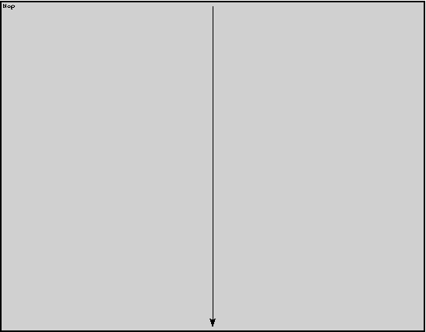

File: Base/Nop.ned
Just lets messages through without any change or delay.
The following diagram shows usage relationships between modules, networks and channels. Unresolved module (and channel) types are missing from the diagram. Click here to see the full picture.
| Name | Direction | Description |
|---|---|---|
| in | input | |
| out | output |
| Name | Type | Description |
|---|
module Nop gates: in: in; out: out; connections: in --> out; endmodule